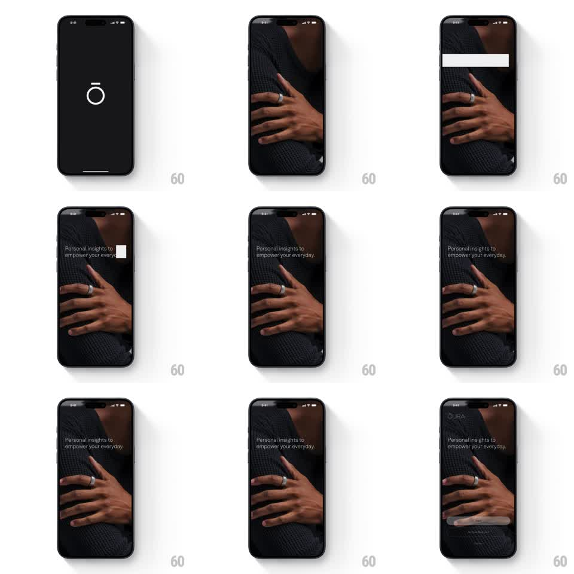

Media
Frame-by-frame

Rebuild this animation 1:1: Oura's splash morph - the thin "ō" ring mark on black swells into a giant circle that becomes a viewport, revealing the intro photo inside it, then expands to full bleed before the tagline sweeps in.

Rebuild this animation 1:1: Oura's splash morph - the thin "ō" ring mark on black swells into a giant circle that becomes a viewport, revealing the intro photo inside it, then expands to full bleed before the tagline sweeps in. ## Integration Integration: stack-agnostic spec - springs given as stiffness/damping, timed motions as duration + curve; map every value to your framework and animation library of choice. ## Scene Opens black with the thin white ō mark center; the intro: a dark, warm photo of hands resting (a ring on one finger), tagline "Personal insights to empower your everyday." mid-left, revealed by a white bar sweep. ## Motion spec Pattern: logo-to-viewport morph - the mark becomes the mask that reveals the scene. - The ō ring holds on black for 400ms, then scales up massively (scale 1 -> 12, 700ms, ease-in) while its stroke stays visually thin - the ring's interior becomes a circular window into the intro photo, which is revealed inside the circle as it grows. - As the circle passes the screen edges, the mask dissolves to full bleed (corner radius animates to 0, 200ms) and the photo settles with a slow Ken Burns (scale 1.05 -> 1, 2s). - The white bar sweeps across the tagline position (300ms, ease-in-out), the text wiping in behind its leading edge; the bar exits right and fades. - The sequence is one continuous gesture - no cuts between logo, circle, and photo. ## Calibration - The photo is dark and warm; the white ring and sweep bar are the only bright elements, so the morph reads cleanly. - Timing is cinematic: about 1.5s from mark to full photo. ## Reduced motion Crossfade black -> photo (400ms); tagline fades in whole (300ms). ## Don't miss - The ring's aspect stays perfectly circular as it scales - an oval morph breaks the illusion. - The photo is already composited inside the ring from the first scale frame; it does not pop in afterward.